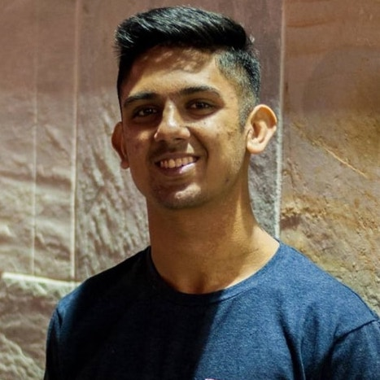

Dishant Pujara

Dishant Pujara graduated from Washington High School as part of the class of 2016. He served as the 2015-2016 Vice President of Membership for WHS DECA. He currently studies Computer Science at University of California Davis. “Out of all the high school experiences that impacted me, DECA was by far the most influential. Beyond just being a student organization to get involved in, it gave us examples real business world problems which we would learn to understand and create a solution for. Also, we were able to reach out to actual representatives from businesses, giving us connections that could be beneficial to us in the future. Along with all of the business experiences, I developed a lifelong connection to the world of business that will impact every decision I make in my own career.”